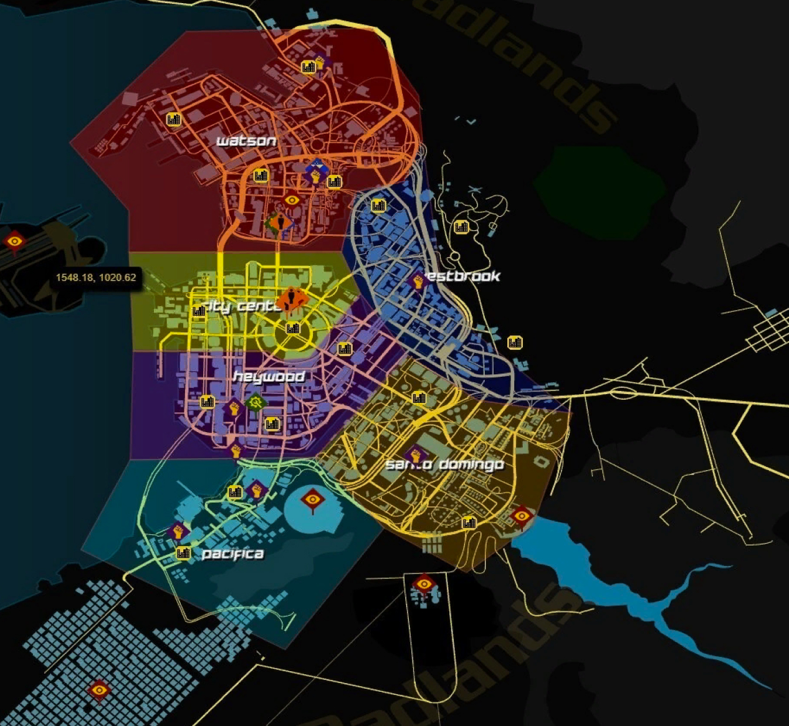

Концовки Cyberpunk
Первые 3 часа геймплея игра даёт вам освоится в мире киберпанк. После трёх часов геймплея вас ждёт заставка после которой игра впустит вас в открытый мир киберпанк. Спустя ещё как минимум 20 часов геймплея вы придёте на одну из следующих концовок, всего их 5.
Концовка #1: Довериться Арасаке
Что требуется: Добраться до миссии Nocturne OP55N1